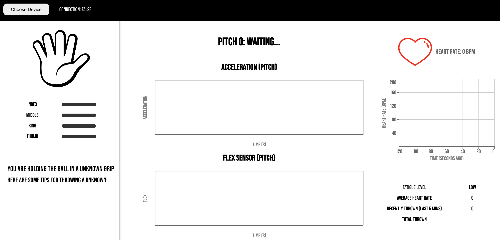
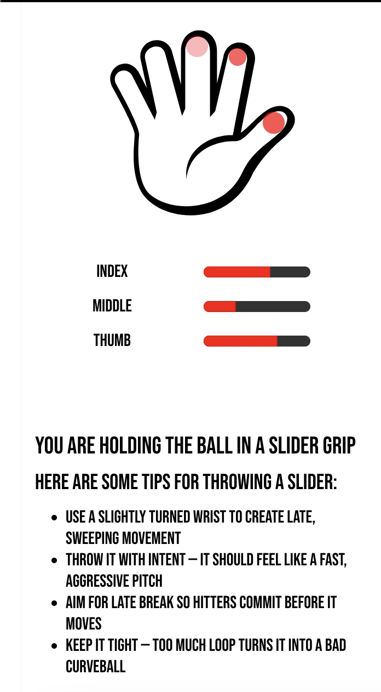
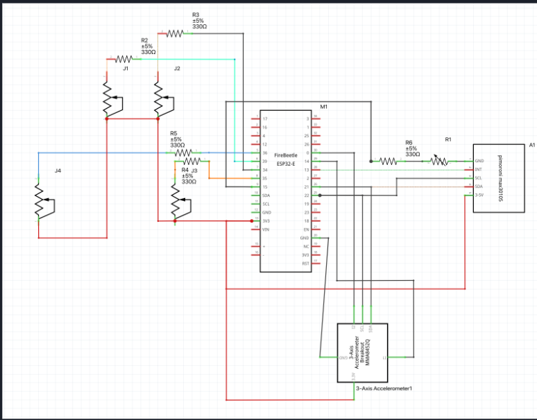

Website
Pitch IQ
A website that gives the user advice on how to throw baseball pitches.
Overview
This was the final project I had to do in CS 479 (Wearable Technologies). To put this simply, it is a site that connects to a device that the user wears on his / her hand like a glove. When the user throws a ball in the same hand that the glove is on, the website will display graphs based on when the user swung or let go of the ball. There is also a hand graph that shows the amount of pressure the user had in all fingers (except the pinky finger); it also displays the user's heart rate over time and the type of pitch the user did.
Project Information
Web Developer / collaborator
April 2026 - May 2026
Completed
Web
Key Features
- Displays amount of pressue applied to ball
- Displays grpahs that show how fast ball went and when user let go of ball
- Evaluates swing of pitch and dteremines pitch type based on finger pressure(s)
- Displays user's heart rate during the last 3 minutes on a graph
- Displays a box showing if the user should take a break or not based on # of pitches done in 5 minutes.
Screenshots




Technical Highlights
- Used nested if statements to determine pitch type based on fsr values for each finger and give advice for each pitch
- Implemented code that determines peaks in accelerometer and FSRs to count number of pitches done in the last 5 minutes
Challenges
One challenge I faced was creating a new graph component from a template my partner made since I am not used to using other modules in React. I just had to read the code to try to understand where the value property is used and how each component (Respnsive Container, LineChart, CartesianGrid, etc.) inside the graph is styled.
Lessons Learned
- Utilizing other modules in React
- Data analysis
Future Improvements
- Utilize machine learning instead of threshold-based detections
- Adding long-term data tracking for season-wde performance analysis
- Expanding to mobile-friendly Progressive Web App (PWA) functionality